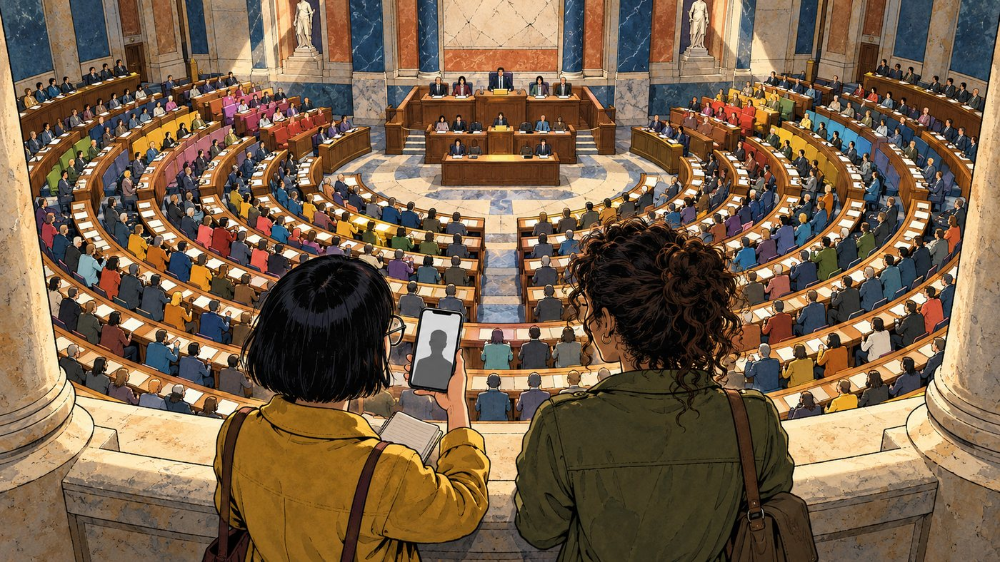
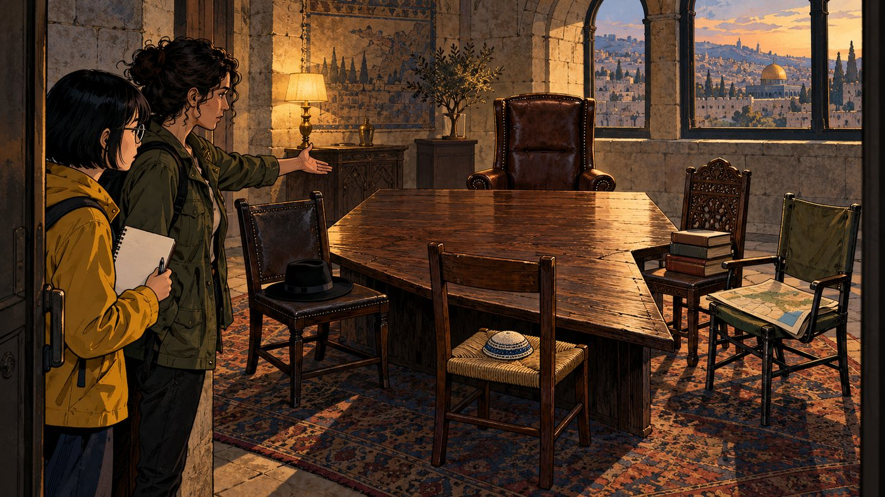
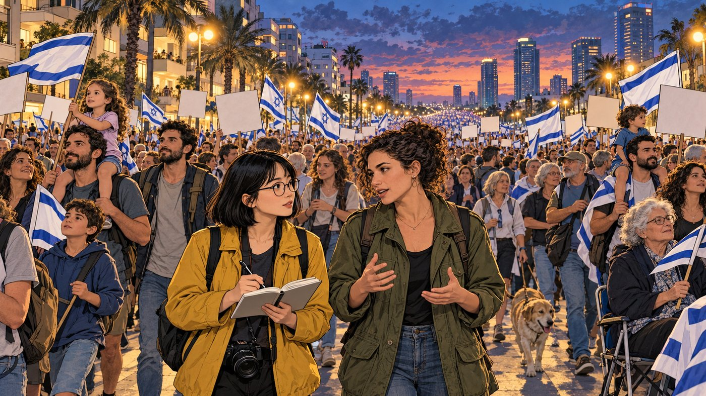
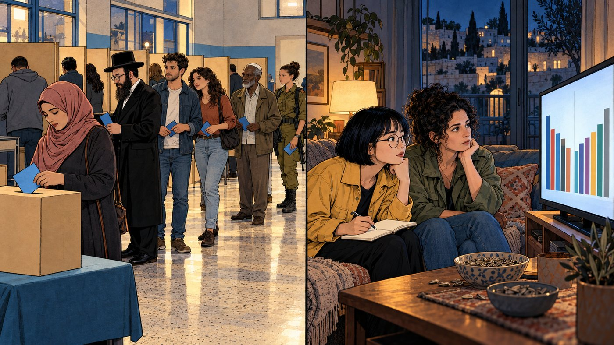

第 1 頁
新聞裡只有一張臉，國會裡有 120 個座位
以色列的選舉遊戲規則

台灣新聞講到以色列，十則有九則的主角是同一個人：總理尼坦雅胡（Benjamin Netanyahu）。
但以色列國會（Knesset）有 120 席，這次大選有 38 份名單登記參選。
阿晴
諾雅，以色列不就是尼坦雅胡嗎？他已經當總理快二十年了。
諾雅
他是任期最長的總理沒錯。但以色列從來沒有一個政黨單獨過半。每一任總理都是靠好幾個黨拼起來的，尼坦雅胡也一樣。
諾雅
投的是政黨名單。全國只有一個選區，得票率換算成席次。湊到 61 席的人，才能當總理。
選完之後才是正戲：組閣
- 總統（虛位元首，由國會選出）逐一約見各黨，問「你推薦誰當總理」。
- 總統把組閣權交給最有機會湊到 61 席的人，先給 28 天，可再延 14 天。
- 湊不到，就換人試；再不行，國會解散、重選。2019 到 2022 年就這樣連選了五次。
這次為什麼特別
上一屆國會 2022 年底上任，撐滿四年任期，2026 年 7 月 17 日解散，10 月 27 日投票。這是 38 年來第一次國會做滿一整屆才改選。中間經過了 2023 年的司法改革大抗爭、10 月 7 日哈瑪斯襲擊、加薩戰爭與伊朗戰事。
台灣對照想像立法院 113 席全部都是不分區，門檻從 5% 降到 3.25%，而且行政院長要由立委投票過半產生。小黨就會變多，而且每個小黨都可能是組閣的關鍵一票。
諾雅
所以要看懂以色列，先別看一個人，要看兩個陣營和夾在中間的第三股力量。翻下一頁。
第 2 頁
尼坦雅胡陣營：右派、宗教右派與極端正統派
2022 年組成、以色列史上最右的執政聯盟

2022 年底，尼坦雅胡拼出 64 席的聯合政府。
五張椅子坐的是五種不同的人，要的東西也不一樣。
諾雅
差很多。聯合黨要的是執政和安全；宗教錫安黨與猶太力量黨要的是約旦河西岸的土地；極端正統派要的是全職讀經的人不用當兵。最後把聯盟撐裂的，就是兵役這件事。
這四年的裂縫
- 2023-01推司法改革、限縮最高法院，引發數十萬人連續數月上街；7 月通過「合理性」修法，2024 年 1 月被最高法院以 8 比 7 推翻。
- 2023-10-07哈瑪斯突襲以色列南部，約 1,200 人遇害；之後是長達兩年多的加薩戰爭。至今政府沒有成立國家調查委員會。
- 2025-01猶太力量黨因加薩停火退出內閣，3 月停火破局後回鍋。
- 2025-07聖經猶太教聯盟因兵役法退出政府，夏斯黨部長也跟著請辭。
尼坦雅胡
Benjamin Netanyahu
聯合黨 Likud
- 現任總理，任期最長的總理
- 主打安全牌，承諾對哈瑪斯「全面勝利」
- 2020 年起受審貪腐案，本人否認；2025 年 11 月向總統申請特赦
出口民調24–27 席
史莫崔赫
Bezalel Smotrich
宗教錫安黨
- 財政部長，屯墾運動出身
- 主張約旦河西岸納入以色列主權、反對巴勒斯坦建國
出口民調約 6 席
班吉維爾
Itamar Ben-Gvir
猶太力量黨 Otzma Yehudit
- 國家安全部長，極右派
- 反對與哈瑪斯停火，主張強硬治安政策
- 拒絕與宗教錫安黨合併，這次分開參選
出口民調6–7 席
- 代表中東、北非裔（Mizrahi）的極端正統派
- 重視宗教教育經費與社會福利
- 部長請辭但沒有離開執政聯盟
出口民調6–7 席
聖經猶太教聯盟
UTJ・Yaakov Asher
歐洲裔極端正統派
- 核心訴求：讀經學生免服兵役
- 2025 年 7 月退出政府
- 選後是兩邊都在拉的對象
出口民調6–7 席
台灣對照台灣 2024 年恢復一年期義務役，役男都要服役。想像有一群人因為全職讀經而集體免役，人口又持續成長；10 月 7 日之後後備軍人一再被徵召，這件事就從宗教議題變成「憑什麼只有我去」的公平問題。
諾雅
所以反對尼坦雅胡的人，也不全是左派。下一頁你會看到好幾位右派。
第 3 頁
反對陣營：反尼坦雅胡，不等於左派
兩位前總參謀長、兩位前總理、一位前副總參謀長

2023 年起，台拉維夫的街頭幾乎每週都有人。
抗議司法改革、要求救回人質、要求調查 10 月 7 日的失誤。
諾雅
這次反對陣營最大的兩個黨，一個是前總參謀長領軍，一個是比尼坦雅胡還右的前總理。他們選前簽了協議：選前不互打，選後一起組閣。
諾雅
換掉尼坦雅胡、全民都要服役、徹查 10 月 7 日。至於巴勒斯坦，他們彼此差很遠。
艾森科特
Gadi Eisenkot
Yashar!（意為「正直」）
- 前國防軍總參謀長，10 月 7 日後進入戰時內閣，2024 年 6 月退出
- 兒子 2023 年 12 月在加薩陣亡
- 主張「錫安主義政府」、全民服役；幾乎排除與阿拉伯政黨組閣
出口民調21–23 席
班奈特＋拉皮德
Naftali Bennett & Yair Lapid
Beyahad（意為「一起」）
- 兩位前總理 2026 年 4 月合組名單，由班奈特領銜
- 班奈特：宗教右派、科技創業家出身，反對巴勒斯坦建國
- 拉皮德：世俗中間派，前未來黨黨魁
出口民調12–15 席
李柏曼
Avigdor Lieberman
以色列家園黨
- 前蘇聯移民出身，曾任國防部長、財政部長
- 安全議題鷹派，但最強硬反對極端正統派免役
- 代表世俗右派
出口民調7–9 席
戈蘭
Yair Golan
民主黨 The Democrats
- 前副總參謀長；2024 年工黨與梅瑞茲合併成民主黨
- 陣營裡最左：支持與巴勒斯坦分離的政治解決、捍衛司法獨立
出口民調約 9 席
- 前總參謀長，2023 年與尼坦雅胡組戰時團結政府
- 民調一直低於門檻，10 月 19 日宣布退選：「沒能說服足夠的人。」
出口民調—
示意圖：這次選舉的兩條軸
位置為依公開立場的示意，不是民調量測。極端正統派兩黨在巴勒斯坦議題上的立場較不突出，主要訴求是宗教與兵役。
台灣對照台灣政治常沿著兩岸立場分邊。以色列這幾次選舉的主軸，已經變成「挺不挺尼坦雅胡」，所以右派的班奈特、李柏曼會和左派的戈蘭站在同一邊。共同目標夠大，立場差很遠的人也能暫時合作；但上臺之後怎麼分配，就很難講。
諾雅
2021 年班奈特和拉皮德就這樣組過一次「變革政府」，撐了一年。那次還有一個關鍵夥伴，下一頁見。
第 4 頁
開票夜：兩邊都不到 61 席
阿拉伯政黨是第三股力量，卻被兩邊擋在門外

10 月 27 日，投票率約 77.7%，是數十年來最高。
約兩成的公民是阿拉伯裔，他們也排在同一條隊伍裡。
出口民調的陣營席次
任一邊要 61 席才能組閣各缺幾席
執政｜反對
尼坦雅胡陣營反對陣營阿拉伯政黨
第 14 台與 i24NEWS 對執政陣營估得最高，各台差距達 10 席。這些都是出口民調，不是正式結果。
阿晴
兩邊都差十席左右，阿拉伯政黨有 17 到 19 席，加進去不就過半了？
諾雅
算術上是。但艾森科特幾乎已經排除和阿拉伯政黨組閣，執政陣營更不可能。最關鍵的少數，被兩邊都擋在門外，這是以色列民主最大的難題之一。
曼蘇爾．阿巴斯
Mansour Abbas
拉姆黨 Ra'am
- 伊斯蘭派但務實，主打阿拉伯社區的治安與建設
- 2021 年成為史上第一個加入執政聯盟的阿拉伯政黨
出口民調約 7 席
賈巴林
Yousef Jabareen
聯合名單 Joint List
- 由 Hadash、Ta'al 等組成，主張平等公民權與巴勒斯坦建國
- 一度被中選會取消參選資格，最高法院 10 月 2 日推翻
出口民調9–11 席
台灣對照2024 年立法院，民眾黨 8 席就足以決定多數。以色列的阿拉伯政黨席次是它的兩倍多，卻常被當成不能碰的票。
把其中一組畫成國會：第 13 台初版出口民調（共 120 席）
左：尼坦雅胡陣營 50｜中：阿拉伯政黨 17｜右：反對陣營 53
任何一邊都要 61 席
接下來可能怎麼走
路線 A：尼坦雅胡挖角
拉到反對陣營的一兩個黨、或極端正統派全員歸隊，就有機會過 61 席。正式結果若讓執政陣營多出兩三席，這條路最快。
路線 B：艾森科特拉攏極端正統派
據《耶路撒冷郵報》，極端正統派沒有排除與艾森科特合作。代價是兵役問題要讓步，偏偏「全民服役」正是反對陣營的主訴求。
路線 C：再選一次
沒人湊得到 61 席，國會解散。2019 到 2022 年以色列就這樣連選五次，期間由看守政府執政。
這張漫畫什麼情況下會錯① 正式結果預計 11 月 4 日確認，雙信封票超過 65 萬張還在驗，只要差兩三席，路線 A、B 的機率就會翻轉。② 本頁陣營歸屬依選前表態推定，極端正統派、以色列家園黨選後都可能換邊。③ 說以色列是多元民主，指的是以色列公民之間；約旦河西岸與加薩約 300 萬巴勒斯坦成年人沒有投票權，這是另一套評價民主的尺度。
諾雅
法院推翻過執政黨的法案、幾十萬人上街、前總參謀長們出來選、阿拉伯政黨拿下紀錄席次。喜不喜歡尼坦雅胡是一回事，但以色列從來不只他一個人。